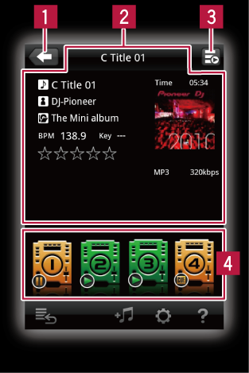

rekordbox Panels
Link Panel (for CDJs/XDJs)
Applicable models: CDJ-2000NXS/CDJ-900NXS/XDJ-1000

Applicable models: CDJ-2000NXS/CDJ-900NXS/XDJ-1000
 Used to return to level above (browser panel).
Used to return to level above (browser panel). The music file’s information is displayed here.
The music file’s information is displayed here. Indicates the playing status of the currently linked DJ player.
Indicates the playing status of the currently linked DJ player. When a DJ player’s icon is tapped, the music file is loaded into that DJ player.
When a DJ player’s icon is tapped, the music file is loaded into that DJ player.